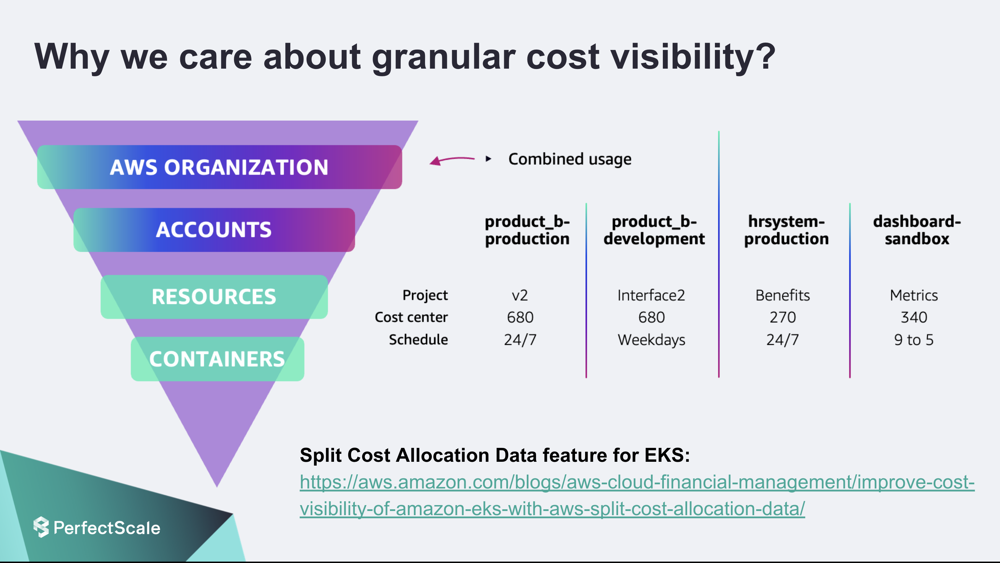

Every organization I've worked with has the same story: someone set up AWS tagging "guidelines" in a Confluence page two years ago, half the team follows them, the other half uses different key names, and 40% of your spend is completely untagged. When finance asks "how much does Team X spend?" you spend a week in spreadsheets guessing.

We fixed this. It took about 6 weeks of focused effort, and the result was going from 38% untagged spend to under 3%, finding $18K/month in orphaned resources, and building dashboards that let every team see their own costs in real time. Here's the exact playbook.
Why Most Tagging Strategies Fail
I've seen the same failure modes at every company:
- Too many tags. If your tagging policy has 15 mandatory tags, nobody will comply. Engineers will copy-paste wrong values just to get past the linter.
- Inconsistent naming. One team uses
env, another usesEnvironment, a third usesenvironment. AWS tags are case-sensitive, so these are three different tags. - No enforcement. Guidelines without enforcement are suggestions. Suggestions get ignored under deadline pressure.
- No value from tagging. If engineers never see the cost data their tags produce, they have no incentive to tag correctly. Tagging must produce visible, useful output.
The teams that need cost visibility the most (fast-growing, lots of experimentation) are the ones least likely to tag consistently. You need enforcement mechanisms that make tagging automatic, not optional.
The Mandatory Tag Taxonomy
We settled on exactly 5 mandatory tags. No more. Every resource in every account must have these:
| Tag Key | Example Values | Purpose | Who Sets It |
|---|---|---|---|
Environment | production, staging, development, sandbox | Separate prod costs from non-prod | Terraform module |
Team | platform, payments, search, data-eng | Cost allocation to teams | Terraform module |
Service | api-gateway, order-service, user-auth | Per-service cost tracking | Terraform module |
CostCenter | CC-1001, CC-1002, CC-2001 | Finance chargeback mapping | Terraform module |
Owner | suheb@company.com | Contact for orphaned resources | Terraform module |
We also have 3 optional tags that teams can add for their own tracking:
Project— for cross-team initiativesAutomation— terraform, manual, cloudformationExpiresAt— for temporary resources (sandbox environments, load test infra)
Key decision: We use PascalCase for all tag keys. This was a deliberate choice — it's visually distinct from AWS's own lowercase tags (like aws:cloudformation:stack-name) and prevents the env/Env/environment inconsistency problem.
Enforcing Tags with AWS Config Rules
Guidelines don't work. Enforcement does. We use AWS Config rules to detect untagged resources and flag them for remediation:
# AWS Config rule — checks for required tags on all taggable resources
resource "aws_config_config_rule" "required_tags" {
name = "required-tags-check"
source {
owner = "AWS"
source_identifier = "REQUIRED_TAGS"
}
input_parameters = jsonencode({
tag1Key = "Environment"
tag2Key = "Team"
tag3Key = "Service"
tag4Key = "CostCenter"
tag5Key = "Owner"
})
scope {
compliance_resource_types = [
"AWS::EC2::Instance",
"AWS::EC2::Volume",
"AWS::RDS::DBInstance",
"AWS::S3::Bucket",
"AWS::Lambda::Function",
"AWS::ECS::Service",
"AWS::ElasticLoadBalancingV2::LoadBalancer"
]
}
}Config rules detect non-compliance but don't prevent it. For prevention, we use Service Control Policies (SCPs) at the AWS Organization level:
{
"Version": "2012-10-17",
"Statement": [
{
"Sid": "DenyEC2WithoutTags",
"Effect": "Deny",
"Action": [
"ec2:RunInstances"
],
"Resource": "arn:aws:ec2:*:*:instance/*",
"Condition": {
"Null": {
"aws:RequestTag/Environment": "true",
"aws:RequestTag/Team": "true",
"aws:RequestTag/Service": "true"
}
}
},
{
"Sid": "DenyRDSWithoutTags",
"Effect": "Deny",
"Action": [
"rds:CreateDBInstance",
"rds:CreateDBCluster"
],
"Resource": "*",
"Condition": {
"Null": {
"aws:RequestTag/Environment": "true",
"aws:RequestTag/Team": "true"
}
}
}
]
}Don't deploy deny SCPs on day one. Start with AWS Config rules in audit mode for 2-4 weeks. Identify all non-compliant resources, fix them, then enable the deny SCPs. We learned this the hard way when an SCP blocked our CI/CD pipeline from launching build instances because the launch template was missing tags.
The Terraform Tagging Module
The single most effective thing we did was create a Terraform module that injects mandatory tags into every resource automatically. Engineers don't have to remember to tag — it happens by default:
# modules/tags/main.tf
variable "environment" {
type = string
validation {
condition = contains(["production", "staging", "development", "sandbox"], var.environment)
error_message = "Environment must be one of: production, staging, development, sandbox."
}
}
variable "team" { type = string }
variable "service" { type = string }
variable "cost_center" { type = string }
variable "owner" { type = string }
locals {
mandatory_tags = {
Environment = var.environment
Team = var.team
Service = var.service
CostCenter = var.cost_center
Owner = var.owner
ManagedBy = "terraform"
}
}
output "tags" {
value = local.mandatory_tags
}
# Usage in any module:
module "tags" {
source = "../modules/tags"
environment = "production"
team = "payments"
service = "order-service"
cost_center = "CC-1001"
owner = "payments-team@company.com"
}
resource "aws_instance" "app" {
ami = "ami-0abcdef1234567890"
instance_type = "m5.large"
tags = module.tags.tags
}
resource "aws_s3_bucket" "data" {
bucket = "payments-order-data"
tags = module.tags.tags
}We also set default_tags in the AWS provider block as a safety net:
provider "aws" {
region = "us-east-1"
default_tags {
tags = {
ManagedBy = "terraform"
Environment = var.environment
Team = var.team
}
}
}Tag Inheritance for EKS Workloads (Kubecost)
EKS is the hardest environment to get cost allocation right. A single EC2 node runs pods from multiple teams and services. AWS Cost Explorer sees one EC2 instance — it has no idea that 60% of its CPU is used by the payments team and 40% by the search team.
We use Kubecost to solve this. Kubecost runs inside the cluster and allocates node costs to individual pods based on actual resource consumption. It reads Kubernetes labels and maps them to cost allocation categories:
# Kubecost values.yaml — label-to-cost mapping
kubecostModel:
allocationModel: proportional
# Map Kubernetes labels to cost allocation dimensions
labelMappingConfigs:
enabled: true
owner_label: "team"
product_label: "service"
environment_label: "environment"
department_label: "cost-center"
# Every deployment must have these labels
# (enforced by OPA Gatekeeper)
apiVersion: apps/v1
kind: Deployment
metadata:
name: order-service
labels:
team: payments
service: order-service
environment: production
cost-center: CC-1001We enforce these labels with OPA Gatekeeper. Any deployment missing the required labels is rejected by the admission controller:
apiVersion: constraints.gatekeeper.sh/v1beta1
kind: K8sRequiredLabels
metadata:
name: require-cost-labels
spec:
match:
kinds:
- apiGroups: ["apps"]
kinds: ["Deployment", "StatefulSet", "DaemonSet"]
parameters:
labels:
- key: "team"
- key: "service"
- key: "environment"Showback vs. Chargeback
There's an important distinction between these two models:
Showback
Teams can see their costs but aren't financially responsible. Costs are informational. This is where you should start.
- Lower friction to adopt
- Drives awareness and behavior change
- No finance process changes needed
Chargeback
Teams are billed for their actual usage. Costs hit their department budget. This requires mature tagging and accurate allocation.
- Strongest incentive to optimize
- Requires accurate, trusted data
- Needs finance team buy-in
We started with showback. For the first 3 months, we sent weekly Slack reports to each team showing their top 10 most expensive resources. This alone drove a 15% cost reduction — teams started cleaning up resources they didn't know they were paying for.
After 6 months of clean showback data, we moved to chargeback for production workloads. Non-production environments remain showback.
Finding $18K/Month in Untagged Spend
When we first activated cost allocation tags in AWS Cost Explorer, we discovered that 38% of our monthly spend — roughly $47K — was completely untagged. We couldn't attribute it to any team or service.
Here's what we found when we dug in:
| Resource Type | Monthly Cost | Root Cause | Action |
|---|---|---|---|
| Orphaned EBS volumes | $4,200 | Detached from terminated instances | Deleted after backup |
| Unused Elastic IPs | $180 | Allocated but not attached | Released |
| Old load balancers | $3,100 | From decommissioned services | Deleted |
| Forgotten RDS instances | $6,800 | Dev/test instances left running | Terminated |
| Unattached NAT Gateways | $2,400 | VPCs with no active workloads | Deleted |
| Oversized CloudWatch logs | $1,300 | Debug logging left on in prod | Retention policy set |
Tag Drift Detection
Tags drift over time. Someone creates a resource manually in the console. A Terraform state gets corrupted. A new service launches without the tagging module. You need automated detection.
We run a daily Lambda function that queries AWS Config for non-compliant resources and posts a report to Slack:
import boto3
import json
from datetime import datetime
def lambda_handler(event, context):
config = boto3.client('config')
slack_webhook = boto3.client('secretsmanager').get_secret_value(
SecretId='slack-finops-webhook'
)['SecretString']
response = config.get_compliance_details_by_config_rule(
ConfigRuleName='required-tags-check',
ComplianceTypes=['NON_COMPLIANT'],
Limit=100
)
non_compliant = response['EvaluationResults']
if not non_compliant:
return {'statusCode': 200, 'body': 'All resources compliant'}
# Group by resource type
by_type = {}
for result in non_compliant:
resource_type = result['EvaluationResultIdentifier'][
'EvaluationResultQualifier']['ResourceType']
by_type.setdefault(resource_type, []).append(
result['EvaluationResultIdentifier'][
'EvaluationResultQualifier']['ResourceId']
)
# Post to Slack
blocks = [f"*{rtype}*: {len(ids)} non-compliant"
for rtype, ids in by_type.items()]
message = (
f":warning: *Tag Compliance Report — {datetime.now().strftime('%Y-%m-%d')}*\n"
f"Found {len(non_compliant)} untagged resources:\n"
+ "\n".join(blocks)
)
# Send to Slack via webhook
import urllib.request
urllib.request.urlopen(urllib.request.Request(
json.loads(slack_webhook)['url'],
data=json.dumps({'text': message}).encode(),
headers={'Content-Type': 'application/json'}
))
return {'statusCode': 200, 'body': f'{len(non_compliant)} non-compliant resources reported'}Cost Explorer Dashboards
The final piece is making cost data visible and useful. We create tag-based views in AWS Cost Explorer that answer the questions finance and engineering actually ask:
- "How much does the payments team spend?" → Filter by
Team = payments, group byService - "What's our staging vs production cost ratio?" → Group by
Environment - "Which service grew the most this month?" → Group by
Service, compare to previous period - "Who owns this $3K/month resource?" → Look up the
Ownertag
We also set up AWS Budgets with tag filters — each team has a monthly budget alert that fires at 80% and 100% of their allocated spend.
Key Takeaways
- 5 mandatory tags, no more. Environment, Team, Service, CostCenter, Owner. Keep it simple or nobody will comply.
- Enforce with automation, not documentation. Terraform modules, SCPs, OPA Gatekeeper, AWS Config rules.
- Start with showback. Let teams see their costs before you charge them. Visibility alone drives 10-15% savings.
- Audit untagged spend immediately. You will find orphaned resources. We found $18K/month.
- Detect drift daily. Tags rot without continuous monitoring.
- EKS needs Kubecost. AWS Cost Explorer can't see inside your cluster. Kubecost bridges the gap.
"You can't optimize what you can't measure. And you can't measure what you haven't tagged."